Introduction
This file is meant to keep track of my progress during the ludum dare
48 hour game programming contest this weekend. I have found that keeping
a log like this helps me stay on track, and I plan to include it with the
final game for the curious to get a view of the process of making a 48 hour
game.
I've never done a contest like this, but it seems to fit my way of working
(binge coding). I have participated in the ACM Programming Contest. My team (Univ.
Central Florida -- go Knights!) made it to the international contest almost every
year, so I am used to programming with dire time constraints.
7/8/02 -- Preparations
I recently re-installed windows, and I wanted to make sure I didn't waste
time during the contest installing Visual C or some library. I'd probably
be more comfortable developing under linux, but I know most everyone will be
trying to run this on windows, not to mention I hope (maybe this is too ambitious)
stuff like sound and maybe pixel shaders that are a pain under linux. If I finish
this thing, though, I'll include a linux port.
- Installed Visual C 6
- installed SkaTools
which is an object/anim exporter from CroTeam, the people behind Serious Sam.
I am considering using this, or just using .obj files, to get models into my game.
This will export simple ascii files with multiple sets of texture coords, per-vertex
weight maps, and morph targets. I made a block-person, textured him,
and tried exporting. It worked nicely.
- I want to find something that renders fonts to bitmaps. I tried two programs,
glFont and
gaffer. Gaffer looks like it packs the
fonts well, and uses freetype to get nice antialiased texture. Both of these have the
drawbacks that they save to a special format, and don't let you have more than one
font/size per image. Not a big deal, but I want something that outputs an image and
a text file with the character locations. Maybe I should just make a game with
no text.
- I started downloading directX. I havent used it since version 3 or something.
I am thinking about using directSound. I didn't realize this thing was 150MB... I installed
it and called it a night
7/9 - 7/10/02 -- Reprise
Nothing today, just lots of good eating. Went to Chevy's in Emeryville on 7/9 and ate
way too much. On 7/10 went to Koryo Korean BBQ in oakland for the first time, it was excellent.
The only way to top off a meal like that was Sweet Inspiration in SF, the best bakery anywhere.
Lucky for us they are open late.
7/11/02 -- Libraries
Wanted to get all the libraries I expect to use togther. Here's the final list I am planning on:
- OpenGL/GLUT - With Gameglut for fullscreen mode.
- DirectSound -- For music and sound, if I can fit it in.
- libPng -For loading image data. I looked at ImageMagick, but I forgot how friggin huge it was. Overkill.
Plus, I can borrow code from the nvidia SDK to load pngs into an opengl texture (nv_png.h).
- PLIB - Probably only use libSG for math, and libFNT for font rendering. There's other good stuff in there,
too, though.
- skaTools - For exporting models. I'll have to write loader for their mesh format during the contest, but it
should be pretty simple.
7/12 -- Out of the gates!
6:00pm I was at work when the topic was announced, so I've got a few hours to think about it.. an idea
is forming... protecting your city from... GODZILLA!!!! History shows again and again that nature points
out the folly of man, and you are the last line of defence between a nuclear lizard and your city.
7:00-9:30 -- it's my birthday (I'm 27) so I am not going to get started right away. We went out for
pizza and then came back and had cake and presents.
10:00 -- I turn on the computer and get started. I d/l mIRC to join the chat. First steps, I am going to
make a model of a house and some trees and see if I can load a grid of them....
10:15 -- a really bad model of a residential block almost done...
10:45 -- enough models to get started.. an empty tile, residential block, a dense forest and a light forest.
Now they need to be textured.
11:10 -- this is taking way too long to texture... Here is a screenshot of the current untextured
tiles (this is not in my game, I haven't written a line of code yet)...
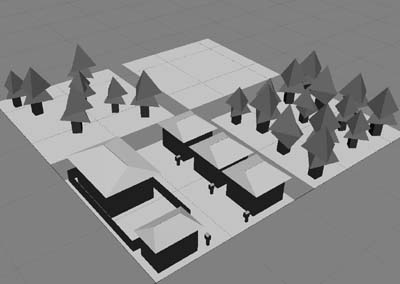
11:38 -- There is a tileable grass texture now
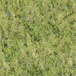
12:13 -- Just spent waaaaay to long trying to make a good tree texture. and it looks like crap.
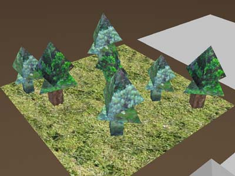
12:13 -- I need to stop now and start writing some code. I'll make a stand-in texture for the house model.
12:52 -- holy crap it's almost 1am and I have written exactly 0 lines of code. I have three tiles finished
though so I will just start writing code. Here is the horrific texture for the residential neighborhood. the
mailboxes are 8 times bigger than the cars on the road. I think I am going to stop making "art" until the game
is playable. (btw all of the images I'm using are from digital camera pictures that I took... )
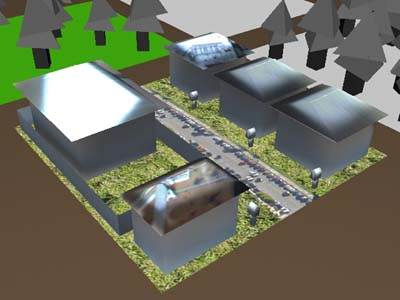
12:55 -- Visual studio. File->New... New win32 console app.. it has begun..
1:14am -- Yay! A Blank GL window.
1:33am -- A camera and a grid. Oh boy.
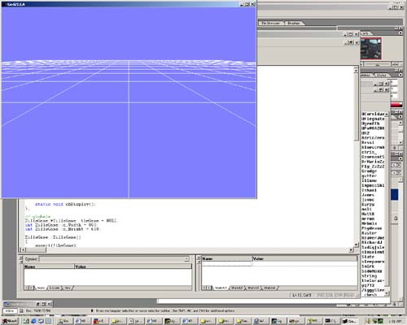
2:15 -- Got a timing loop in with help from the folks still awake on #ludumdare.
2:18 -- D/L and installing python to write converters from am to something dead simple. (on
second though, I looked at the .am files and decided they were simple enough as is. )
3:12 -- I've got a spinning camera and my loader will read points now. I'm fading fast....
4:05 AM -- ok, it took a couple of tries to get mesh loading working, but now I can load meshes.
No texture yet. I'm going to call it a night now. Here is a last screenshot of the wonderful
mesh-loading, camera-spinning program. Goodnight!
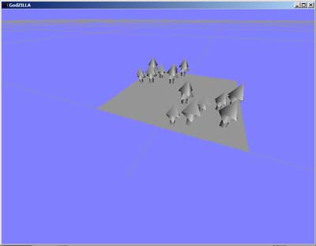
7/13 -- Day two
11:00am -- Woke up, put a pot of coffee on. Hopefully I won't get too distracted with making
art and sound, and will get some coding done. I'm shooting for getting it finished today so tommorow
is for polish. There is zero likelihood of that, but if I shoot for that, it might get finished.
12:39 -- Yay, fonts are working and I have a fps counter now.
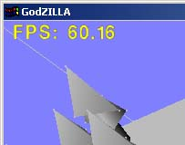
3:30 -- No updates for a while so I thought I'd throw something in even though not much is accomplished.
I am working on textures now, and I've got the images loading ok, but they are not happy about sticking
to the model yet.
5:03 -- Finally got the texture working. As always, it was something little that I kept overlooking.
Here is a rather pathetic screenshot, but it has textures on it... Grrr.. so much time wasted on this
crap.
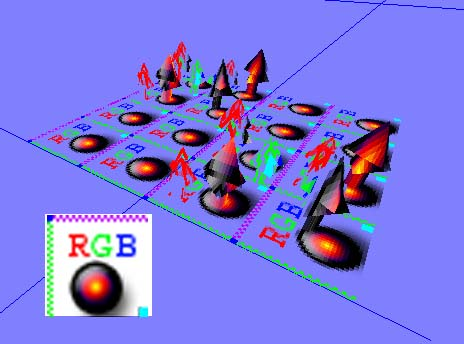
5:59 -- the 24 hour mark. Cleaning up the now-working texture code. I had a matrix moment, too:
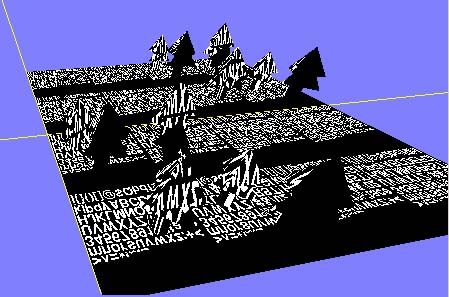
6:25 -- at last, the bitter nightmare of texture management is over. Each texture has it's own id, and
it all seems to work. RGB and RGBA texture are supported, and no longer stomp all over the font textures.
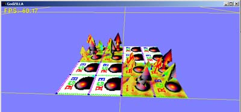
8:14 -- I decided to go for a different, more cartoonish look. Here is the first new "tile". I am
going to have to make a few more of these, but then I can really start on the game part.
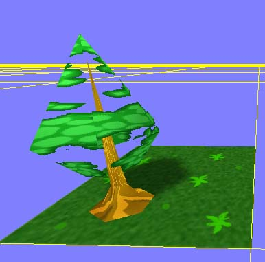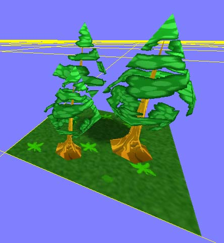
10:41 -- No updates for a while, I've been adding actual game code to make levels in and stuff.
Here is the glorious testmap!
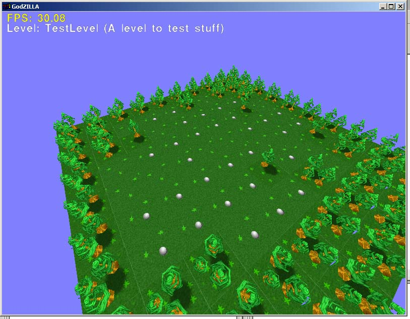
11:02 -- Made it use opengl display lists to bring the framerate back up to where it should be.
11:38 -- Things really slow down with 2500 tiles (50x50 map) full of trees. 3 FPS. Wow.
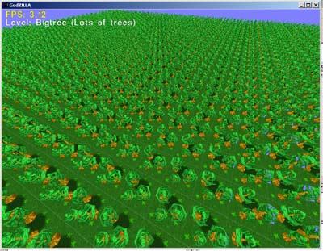
1:00am -- Well my game really needs something to protect against. So I've been modelling a Godzilla for the
last hour. It turned out alright. Now I need to paint a map.
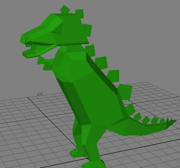
1:38 am -- texture is not finished, but I've got a model in my game! woo hoo!
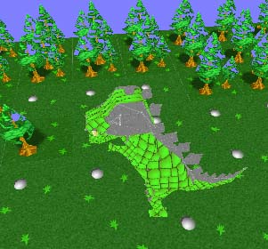
2:09 am -- texture is pretty much finished...
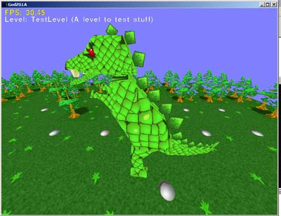
3:00 am -- made a good start on ai, but right now that just mean he moves around randomly
3:34 am -- i can't take any more tonight.. i am going to sleep. Right now he just runs around
randomly but the camera follows and it looks pretty cool. no animation, of course...goodnight.
7/14 -- Crunch Time
10:00 am -- woke up, started coffee, started a title screen. But what I really need is more tiles,
if i want to have a game.
11:00 am -- made a title screen, a "box" texture to put text in and am starting on tiles. Must expediate!
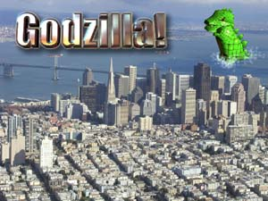
11:30 -- made a skybox (skyball, really) model and texture, and squares for the roads. just need ocean,
building, tall building and power plant tiles now...
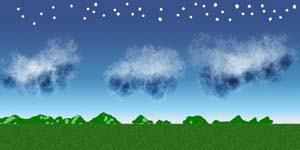
11:42 -- got the skybox in the game
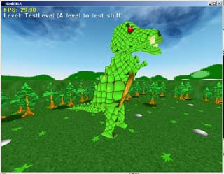
12:09 -- got the title screen working in the game. I am starting to really regret going with a
3d game for the 48 hour compo. If it was a week, ok. it's way more fun to write IMHO, but I have little
or no gameplay coded yet because of spending so long on the basics. For instance, I have no time for
sound or the theme song that inspired this game. :)
1:40 -- made some road tiles. Next time, I am going to do gameplay first. I'm afraid I am going to have
a cool looking, non-interactive demo at the end of this..
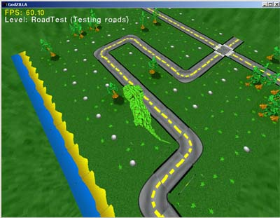
1:47 -- so I think I have the gameplay all figured out. Godzilla starts at the ocean, and tries to reach
the power plant. You have a few tanks to command, which can only travel on roads. you must move them around
to stop godzilla.
2:20 -- powerplants done. Here is a great shot of Godzilla terrorizing a power plant!
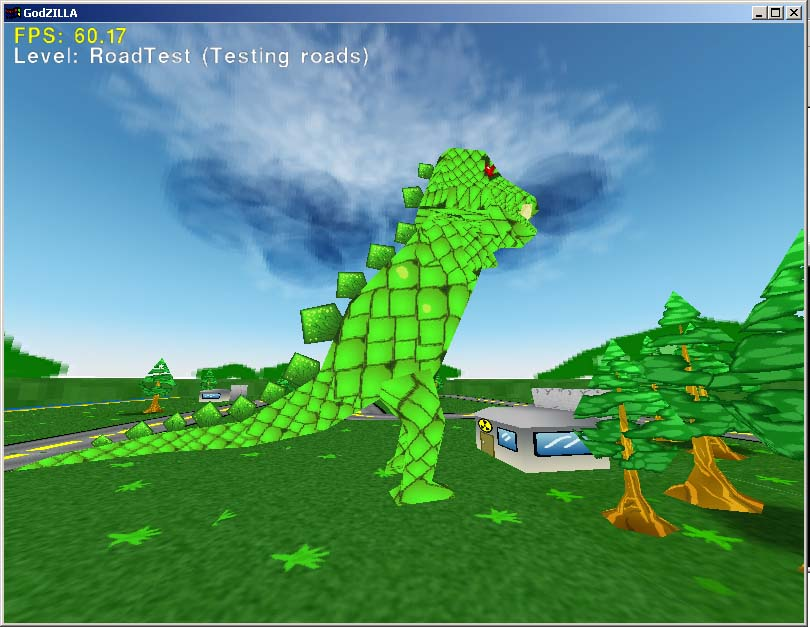
3:00 -- Houses!
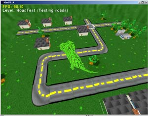
3:30 -- better camera control, made a working title screen with level picking and stuff.
3:47 -- camera control is horrible, but finished.
4:01 -- My first level! Yay! But it's still not playable yet...
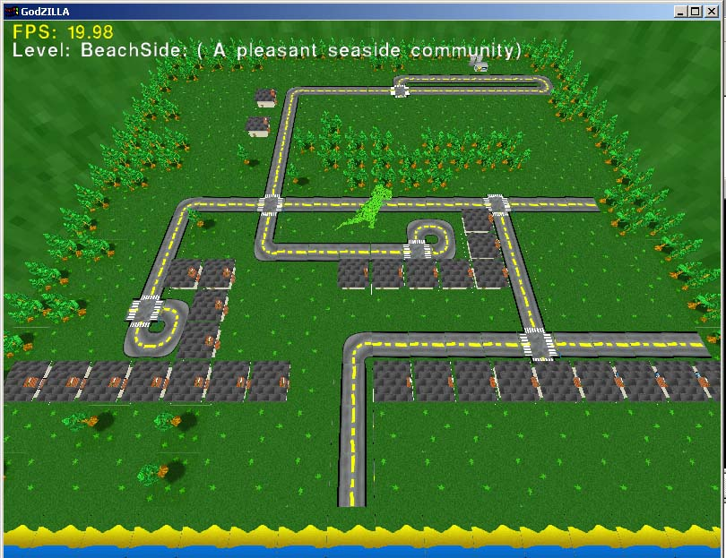
5:45 -- I give up, but I'm going to submit what I have. Hopefully I'll finish it tonight.
send me mail: joeld42@yahoo.com